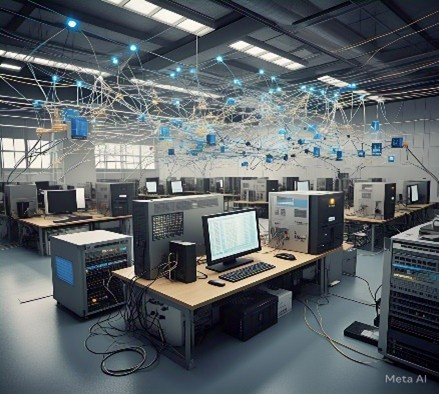

CUARTA REVOLUCION INDUSTRIAL
¿Qué es la Cuarta Revolución Industrial y cómo surge?
Nos encontramos en los inicios de la Cuarta Revolución Industrial, también conocida como Industria 4.0. Un término que fue acuñado en 2011 por el economista Klaus Schwab, Fundador del Fondo Económico Mundial. Este concepto define la fabricación informatizada, que combina avanzadas técnicas de producción con tecnologías inteligentes que se integrarán en las organizaciones y la vida de las personas.
Actualmente, con la implementación de la tecnología en las empresas, estamos viviendo el inicio de la Cuarta Revolución Industrial. La digitalización de la industria y de los servicios se trasladan a todos los ámbitos, construyendo compañías ágiles y colaborativas, que mejoran sus productos y servicios dirigidos a un público
Hoy, la Cuarta Revolución Industrial es el resultado del dinamismo de las tecnologías y de la combinación de sistemas digitales y físicos para mejorar la calidad de vida del ser humano. En tal sentido, la filosofía en el ámbito laboral y en los procesos del mundo 4.0 debe transformarse; la enseñanza debe superar lo convencional y avanzar hacia el uso de herramientas digitales, la inteligencia artificial y el análisis de datos para formar personas altamente competitivas que respondan a las exigencias de este mundo 4.0.
Impacto en la sociedad:
La Cuarta Revolución Industrial afectará prácticamente todos los aspectos de la vida diaria, con impactos tanto positivos como negativos. En términos generales, se espera:
Cambios en la educación: Habrá un enfoque mucho mayor en la formación en ciencia, tecnología, ingeniería y matemáticas (STEM), junto con habilidades de pensamiento crítico y adaptación, dado el dinamismo del nuevo entorno laboral.
Transformación del mercado laboral: La automatización eliminará muchos trabajos rutinarios, pero también creará nuevos empleos altamente cualificados en áreas tecnológicas. Sin embargo, la transición puede provocar una desigualdad laboral si los trabajadores no se capacitan a tiempo para adaptarse a los nuevos roles.
Desarrollo urbano y ciudades inteligentes: El uso de la tecnología permitirá la creación de ciudades más eficientes en cuanto al consumo de recursos, el transporte, la gestión de residuos y la seguridad.
Interacción entre humanos y máquinas: Con la aparición de la IA avanzada, los humanos trabajarán cada vez más en colaboración con máquinas que no solo ejecutarán órdenes, sino que también serán capaces de participar en procesos de toma de decisiones.
Conectividad a gran escala: El uso masivo de sensores y dispositivos conectados al IoT permitirá la interconexión de máquinas, sistemas y seres humanos. Esta red permitirá que se compartan datos en tiempo real y se tomen decisiones automatizadas.

Computación en la nube y análisis de datos: La capacidad de procesar grandes volúmenes de información en la nube permitirá un análisis más eficiente y profundo de los datos para optimizar procesos y generar nuevos modelos de negocio.
Inteligencia artificial (IA) y machine learning: Las máquinas no solo realizarán tareas repetitivas, sino que aprenderán de los datos y tomarán decisiones más complejas, basadas en patrones y predicciones.
Automatización avanzada: Los sistemas robóticos y las líneas de producción totalmente automatizadas serán comunes. Las fábricas «inteligentes» podrán autogestionarse, reduciendo la necesidad de intervención humana en muchas fases del proceso productivo.
Fabricación aditiva y personalización masiva: La impresión 3D y otras tecnologías permitirán la creación de productos a medida y personalizados a escala, reduciendo tiempos de producción y costes.